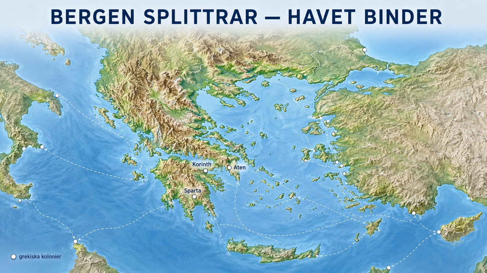
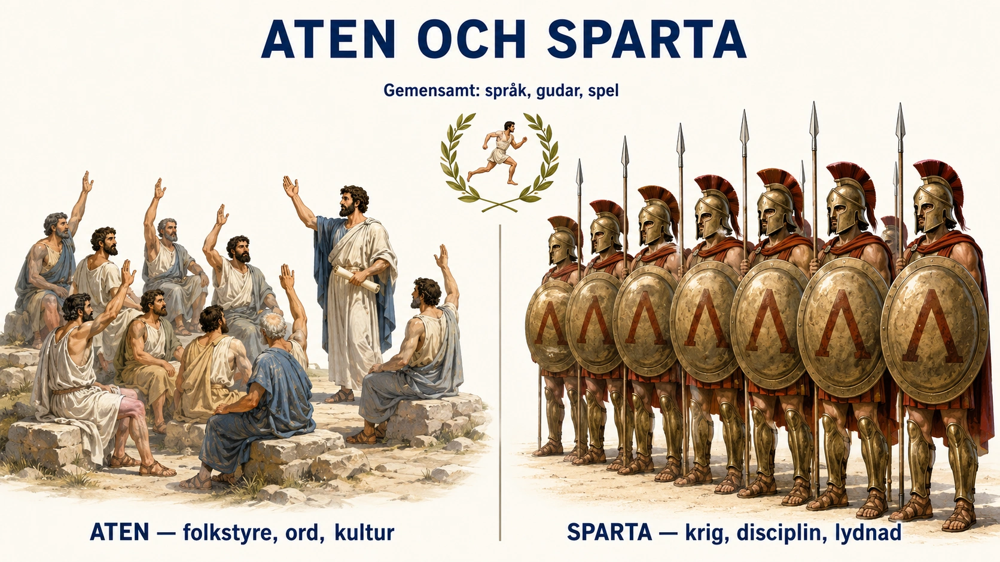
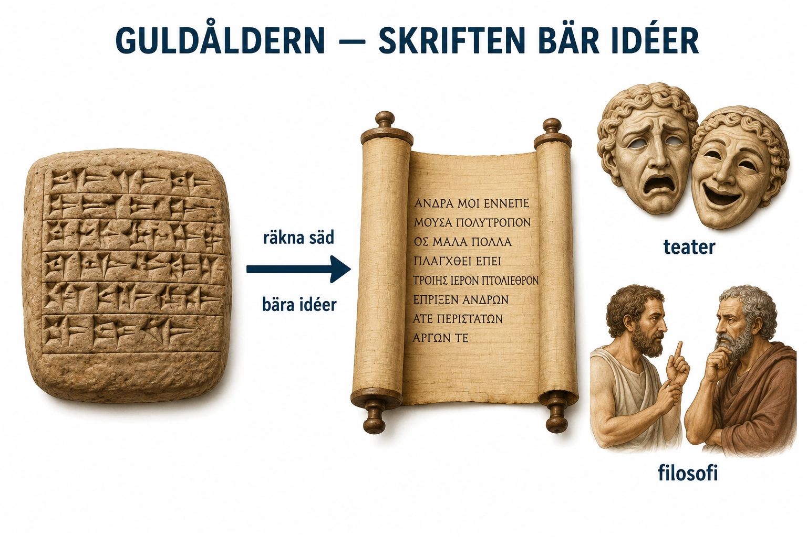
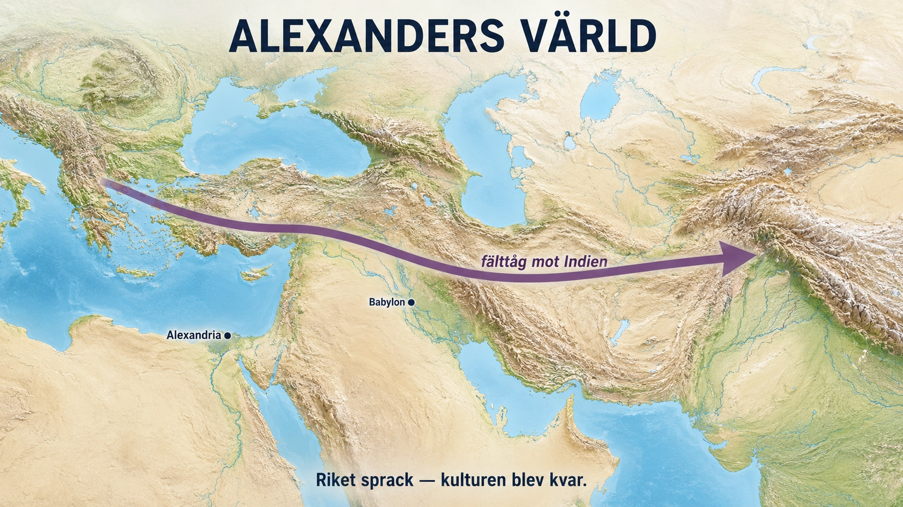

— hur splittring föder idéer —
I förra delen såg vi hur de stora floderna samlade människor till stora riken. Nilen och de andra floderna band ihop landet, så att en kung kunde styra över ett vidsträckt område. Grekland var precis tvärtom.
Grekland hade ingen stor flod. I stället var landet fullt av berg, dalar, öar och långa kuster. Bergen låg i vägen mellan människor. Två dalar kunde ligga nära varandra, men ändå vara svåra att nå, för det låg ett berg emellan. Därför levde grekerna i många små, egna samhällen i stället för i ett enda rike.
Så växte det fram hundratals självständiga stadsstater. En stadsstat kallades polis och bestod av en stad med landet runt omkring. Varje polis hade egna lagar, egen armé och egna ledare. Aten, Sparta, Korinth och Thebe var alla egna stadsstater. Grekerna blev alltså inte ett folk i ett land, utan många stadsstater som talade samma språk.
Men om bergen splittrade grekerna, band havet ihop dem. Grekland ligger vid Medelhavet och har massor av kust, vikar och öar. Ofta var det lättare att segla mellan två platser än att ta sig över bergen till fots. Därför blev grekerna skickliga sjöfarare. De byggde skepp, handlade och fick kontakt med andra folk.
Titta på kartan innan du läser vidare — jämför bergen och havet:

Havet blev också viktigt för att Grekland hade ont om bra åkermark — mycket av landet var bergigt och stenigt. När befolkningen växte räckte inte maten. Därför började grekerna grunda kolonier runt Medelhavet och Svarta havet. En koloni var en ny stad som greker grundade på en annan plats, till exempel i södra Italien eller på Sicilien. Kolonierna var oftast egna stadsstater, men med grekiskt språk, grekiska gudar och grekisk kultur.
Greklands geografi gjorde alltså två saker på en gång. Bergen splittrade grekerna i många stadsstater. Havet gjorde dem till sjöfarare och handelsmän. Grekerna var inte ett enat rike — men genom havet, handeln och språket hörde de ändå ihop. Därför kan vi tala om en grekisk värld, fast det aldrig fanns ett enat grekiskt land.
När vi läser om de första stora flodkulturerna ser vi ofta samma mönster. I Egypten fanns Nilen. I Mesopotamien fanns Eufrat och Tigris. I Indien fanns Indusfloden och i Kina Gula floden. Floderna gav vatten, bördig jord och möjlighet att odla mycket mat. Men de gjorde också något mer: de band samman människor. Längs floderna kunde kungar och ämbetsmän styra stora områden, ta upp skatt och bygga mäktiga riken.
Grekland fungerade på ett annat sätt.
Grekland hade ingen stor flod som band ihop landet. I stället bestod området av berg, dalar, öar och långa kuster. Landskapet var vackert, men svårt att styra. Bergen skar av människor från varandra. En dal kunde ligga nära en annan, men ändå vara svår att nå eftersom berg låg emellan. Det gjorde att människor ofta levde i mindre samhällen som utvecklades åt olika håll.
Därför växte det inte fram ett enda stort grekiskt rike under antikens tidiga period. I stället uppstod många självständiga stadsstater. En sådan stadsstat kallades polis. En polis bestod av en stad och området runt omkring. Varje stadsstat hade sina egna lagar, sin egen armé, sina egna ledare och sin egen identitet. Aten, Sparta, Korinth och Thebe var exempel på grekiska stadsstater.
Det här är en av de viktigaste skillnaderna mellan Grekland och flodkulturerna. I flodkulturerna skapade geografin ofta stora riken. I Grekland skapade geografin splittring. Bergen gjorde det svårt att ena alla greker under en kung. Därför blev grekerna inte först och främst ett folk i ett land, utan många stadsstater som talade samma språk och delade liknande kultur.
Men om bergen splittrade grekerna, så band havet ihop dem.
Grekland ligger vid Medelhavet. Överallt fanns havsvikar, hamnar och öar. Eftersom landet hade så mycket kust blev havet en naturlig väg att resa på. Det var ofta lättare att segla mellan två platser än att ta sig över bergen på land. Därför blev grekerna skickliga sjöfarare. De byggde skepp, bedrev handel och fick kontakt med andra folk runt Medelhavet.
Havet blev också viktigt eftersom Grekland hade ont om bra jordbruksmark. Mycket av landet var bergigt och stenigt. Det gick att odla oliver och vindruvor på många platser, men det fanns inte alltid tillräckligt med bördig jord för att försörja en växande befolkning. När människor blev fler behövdes mer mat, mer mark och fler handelskontakter.
Därför började grekerna grunda kolonier runt Medelhavet och Svarta havet. En koloni var en ny stad som grundades av greker på en annan plats. Grekiska kolonier kunde finnas i södra Italien, på Sicilien, längs Mindre Asiens kust och vid Svarta havet. Men kolonierna var inte delar av ett stort grekiskt imperium. Ofta blev de egna stadsstater, men med grekiskt språk, grekiska gudar och grekisk kultur.
Genom kolonierna spreds grekiska varor, idéer och levnadssätt. Grekerna handlade med vin, olivolja, keramik och metallvaror. De tog också emot kunskap från andra folk. De lärde sig av fenicier, egyptier och folk i Mellanöstern. Grekland var alltså inte isolerat, trots att stadsstaterna var splittrade. Tvärtom: havet gjorde grekerna öppna mot omvärlden.
Det viktiga att förstå är därför att Greklands geografi skapade två saker samtidigt. Bergen gjorde att Grekland splittrades i många stadsstater. Havet gjorde att grekerna blev sjöfarare, handelsmän och kolonisatörer.
Det är denna geografiska motor som driver hela den grekiska antiken. Grekerna var inte enade som ett rike. De levde i många stadsstater som ofta tävlade och krigade mot varandra. Men genom havet, handeln, språket och kulturen hörde de ändå ihop. Det är därför vi kan tala om en grekisk värld, trots att det inte fanns ett enat grekiskt land.
Det finns en berättelse som är nästan för prydlig, och du har just läst den: Grekland hade berg i stället för floder, bergen splittrade folk, alltså blev det stadsstater i stället för ett rike. Enkelt, elegant, lätt att komma ihåg. Men i förra delens fördjupning ställde vi en misstänksam fråga om floderna — bestämde geografin verkligen allt? — och samma fråga måste ställas här, annars lurar vi oss själva. För om berg automatiskt skapar splittrade småstater, hur kommer det sig då att andra bergiga länder blev enade riken, och att grekerna själva till slut enades trots bergen?
Geografin är verklig — men den är inte ett öde. Att Grekland är sönderskuret av berg är sant, och det gjorde det svårt att styra allt från ett håll. Men "svårt" är inte "omöjligt". Schweiz är minst lika bergigt och blev ett land. Bergen i Grekland var inte en mur som tvingade fram stadsstater — de var ett hinder som gjorde en viss utveckling lättare och en annan svårare. Det är en viktig skillnad. Geografin lutade bordet åt ett håll; den vältde inte bollen åt bara ett möjligt mål.
Splittringen var också ett val. Grekerna hade faktiskt saker som kunde ha enat dem: samma språk, samma gudar, samma stora berättelser, gemensamma spel. De hade råmaterialet till en nation. Att de ändå förblev hundratals rivaliserande stadsstater berodde inte bara på bergen, utan på att varje polis höll så hårt på sin egen självständighet att den hellre krigade mot en granne än underordnade sig. Stoltheten över den egna staden — att vara atenare eller spartan snarare än bara "grek" — var lika mycket en orsak till splittringen som landskapet. Bergen gav möjligheten till splittring; människorna valde att leva i den.
Och havet skar åt två håll. Enkla versionen säger att havet "band ihop" grekerna, och det gjorde det — men det är bara halva sanningen. Samma hav som förde grekiska handelsskepp till Egypten förde också grekiska kolonister allt längre bort från moderstaden, där de grundade nya självständiga stadsstater i stället för att stärka en gemensam stat. Havet spred alltså grekerna tunt över ett enormt område, från Spanien till Svarta havet. Det gjorde den grekiska kulturen stor och sammanhängande, men det gjorde den grekiska politiken ännu mer utspridd och svårsamlad. Havet enade kulturen och splittrade makten på samma gång.
Varför det här spelar roll. Man kan lätt få intrycket att historien är en sorts maskin: mata in en flod, få ut ett kungarike; mata in berg, få ut stadsstater. Men då missar man det mest mänskliga i historien — att människor gör olika saker med samma förutsättningar. Det syns tydligast i slutet av den grekiska historien. Bergen fanns kvar hela tiden, oförändrade. Ändå blev Grekland till sist enat — inte inifrån genom fri vilja, utan utifrån, när kung Filip av Makedonien tvingade ihop stadsstaterna med sin armé. Samma berg som "skapat" splittringen hindrade inte en tillräckligt stark makt från att ena landet. Det var inte geografin som ändrats. Det var vem som hade makten.
Så var landar vi? Ungefär där vi landade med floderna: geografin är ingen liten sak, men den skriver inte manus åt människorna. Bergen och havet gav Grekland en scen som lutade mot splittring och sjöfart — och grekerna gjorde något extraordinärt av just den scenen. Att splittringen sedan blev bränslet för deras storhet — hur hundratals tävlande städer kunde sporra fram en idéexplosion som ett lugnt enat rike kanske aldrig hade gett — är den verkligt spännande frågan. Och den är nästa dels ämne.
Eftersom Grekland var uppdelat i många stadsstater kunde de utvecklas åt olika håll. Två av de mest kända var Aten och Sparta. Båda var grekiska, men de var nästan varandras motsatser. Aten blev känt för demokrati, handel och kultur. Sparta blev känt för krig, disciplin och stränga soldater.
Titta på bilden innan du läser vidare — jämför de två sidorna:

I Aten växte ett styrelseskick fram som kallades demokrati, vilket betyder ungefär folkstyre. Men Atens demokrati var inte som vår. Den var mycket begränsad. Bara fria män som var medborgare fick vara med och bestämma. Kvinnor, slavar och utlänningar fick inte rösta. Aten var alltså inte demokratiskt på samma sätt som Sverige i dag, där alla vuxna får rösta. Ändå var det viktigt, för det byggde på en ny idé: att vanliga medborgare kunde vara med och styra. Det var ett tidigt frö till senare demokrati.
I Aten samlades medborgarna i en folkförsamling och röstade själva om lagar, krig och fred. Det kallas direkt demokrati. I Sverige har vi i stället representativ demokrati — vi väljer politiker som bestämmer åt oss.
Sparta var tvärtom. Där handlade allt om krig och lydnad. Pojkarna togs tidigt från hemmet och tränades till soldater. De skulle tåla smärta, lyda order och sätta staten först. Sparta ville inte ha fria diskussioner, utan starka krigare och ett stabilt samhälle.
En viktig grupp i Sparta var heloterna — en underkuvad befolkning som tvingades odla jorden åt spartanerna. Heloterna var många, och spartanerna var rädda för uppror. Just den rädslan gjorde Sparta ännu mer militärt: de måste hålla ordning både på fiender utanför och på heloterna hemma.
Trots att stadsstaterna ofta krigade fanns det som band grekerna samman. De talade samma språk och trodde på samma gudar, som Zeus, Athena och Poseidon. De samlades också till gemensamma fester. De olympiska spelen i Olympia hölls till guden Zeus ära, och dit kom greker från olika stadsstater för att tävla — till och med fiender kunde mötas där i fred.
Ett annat exempel är perserkrigen. När det stora Perserriket i öster försökte erövra Grekland blev hotet så stort att flera stadsstater samarbetade. Vid slaget vid Maraton år 490 f.Kr. besegrade Aten en persisk armé. Berättelsen om budbäraren som sprang från Maraton till Aten blev senare grunden till maratonloppet. Perserkrigen visar något viktigt: grekerna var splittrade, men kunde enas när en gemensam fiende hotade.
Eftersom Grekland var uppdelat i många stadsstater kunde samhällena utvecklas på olika sätt. Två av de mest kända stadsstaterna var Aten och Sparta. De var båda grekiska, men de var nästan varandras motsatser. Aten blev känt för demokrati, handel, kultur och diskussion. Sparta blev känt för krig, disciplin och militär träning.
Aten låg i området Attika. Där utvecklades ett styrelseskick som kallades demokrati. Ordet demokrati betyder ungefär folkstyre. Men Atens demokrati var inte en modern demokrati. Den var mycket begränsad. Det var bara fria män som var medborgare som fick delta i politiken. Kvinnor, slavar och utlänningar fick inte rösta och hade inte politisk makt.
Detta är viktigt. Aten var inte demokratiskt på samma sätt som Sverige är i dag. I dag tänker vi att alla vuxna medborgare ska ha rösträtt, oavsett kön, bakgrund eller rikedom. Så var det inte i Aten. Ändå var Atens demokrati viktig, eftersom den byggde på idén att medborgare kunde vara med och styra samhället. Det var ett tidigt frö till senare demokratiska idéer.
I Aten samlades medborgarna i folkförsamlingen. Där kunde de rösta om viktiga frågor, till exempel lagar, krig och fred. Detta kallas direkt demokrati, eftersom medborgarna själva röstade. I Sverige har vi i stället representativ demokrati. Det betyder att vi väljer politiker som fattar beslut åt oss.
Sparta var annorlunda. Där var samhället byggt kring krig och lydnad. Spartanska pojkar tränades från tidig ålder för att bli soldater. De skulle tåla smärta, lyda order och sätta staten före sig själva. Sparta hade inte som mål att skapa fria diskussioner eller öppen politisk debatt. Målet var att skapa starka krigare och ett stabilt samhälle.
En viktig del av Spartas samhälle var heloterna. Heloterna var en underkuvad befolkning som arbetade åt spartanerna. De brukade jorden och producerade mat. Eftersom heloterna var många var spartanerna rädda för uppror. Det gjorde att Sparta blev ännu mer militärt. De behövde kontrollera både yttre fiender och människor inom sitt eget område.
Aten och Sparta visar hur olika de grekiska stadsstaterna kunde vara. De talade grekiska och dyrkade många av samma gudar, men de tänkte olika om hur ett samhälle skulle styras. Aten betonade medborgarnas deltagande, även om bara en liten grupp räknades som medborgare. Sparta betonade ordning, krig och lydnad.
Trots att stadsstaterna ofta var splittrade fanns det sådant som band grekerna samman. De hade ett gemensamt språk. De hade liknande gudar och myter. De kände till berättelser om Zeus, Athena, Apollon och Poseidon. De kunde också samlas vid gemensamma religiösa och idrottsliga högtider.
De olympiska spelen är ett tydligt exempel. De hölls i Olympia till ära för guden Zeus. Dit kunde greker från olika stadsstater komma för att tävla. Under spelen kunde fiender mötas på samma plats. Det visar att grekerna såg sig som del av en större grekisk kultur, även om de tillhörde olika stadsstater.
Ett annat exempel är perserkrigen. Perserriket var ett enormt rike öster om Grekland. När perserna försökte erövra delar av den grekiska världen blev hotet så stort att flera grekiska stadsstater samarbetade. Slaget vid Maraton år 490 f.Kr. blev ett viktigt ögonblick. Aten besegrade en persisk armé, och berättelsen om budbäraren som sprang från Maraton till Aten blev senare grunden till maratonloppet.
Perserkrigen visar något viktigt: grekerna var splittrade, men de kunde enas när de hotades av en gemensam fiende. Aten och Sparta var olika, och de skulle senare hamna i konflikt med varandra. Men mot Perserriket kunde grekerna tillfälligt kämpa tillsammans.
Därför är Aten och Sparta mer än två exempel. De visar hela den grekiska världens motsägelse. Grekerna var en kultur, men inte ett enat land. De delade språk, gudar, spel och berättelser, men de styrdes av olika lagar, olika ideal och olika stadsstater.
Standardtexten ger dig en ren och tydlig motsats: Aten stod för frihet, kultur och demokrati, Sparta för krig, disciplin och lydnad. Ljus mot mörker, ord mot svärd. Det är en användbar bild — och som många användbara bilder är den delvis en efterhandskonstruktion. Verkligheten var rörigare, mörkare på båda sidor, och — mest intressant — vi vet mindre säkert än vi tror. Ta de tre sakerna i tur och ordning.
Aten var mörkare än ordet "demokrati" får det att låta. Atens folkstyre vilade på slaveri: staden kunde ha lika många slavar som fria medborgare, och det var deras arbete som gav medborgarna tid att sitta i folkförsamlingen. Aten var dessutom inte bara en fredlig kulturstad. Efter perserkrigen ledde Aten ett förbund av grekiska stater som från början skulle skydda mot Persien — men Aten förvandlade det steg för steg till ett eget imperium som tvingade "bundsförvanterna" att betala och slog ner dem som ville lämna. Och folket självt, demos, kunde vara både klokt och grymt. Samma folkförsamling som röstade om lagar röstade också igenom att en hel ö, Melos, skulle krossas för att den vägrat lyda, och dömde senare filosofen Sokrates till döden för hans idéer. Demokrati betydde att många bestämde — inte att de alltid bestämde vist eller milt.
Sparta var mer sammansatt än "krigsmaskin". Vi tänker oss Sparta som motsatsen till Atens politiska liv, men Sparta hade i själva verket ett ganska invecklat styre: två kungar samtidigt, ett råd av äldre, en folkförsamling och valda ämbetsmän som övervakade till och med kungarna. Flera antika tänkare, som Aristoteles, diskuterade Sparta som ett balanserat system där olika makter höll varandra i schack — inte som ren råstyrka. Samtidigt hade Spartas berömda disciplin en mörk motor. Spartanerna var en liten grupp som satt ovanpå en mycket större underkuvad befolkning, heloterna, och militarismen var till stor del en ständig beredskap mot dem som odlade deras mat. Spartas hårdhet var inte bara stolthet över krigskonst — den var också rädsla för det egna folket.
Så varför ser vi dem så prydligt uppdelade? Här ligger den verkligt viktiga poängen, och den handlar om källkritik. Nästan allt vi vet skrevs av atenare eller av författare påverkade av Aten. Aten var en stad full av skrivande människor — historiker, dramatiker, filosofer — och lämnade därför efter sig ett rikt självporträtt, med både glans och skuggor. Sparta skrev nästan ingenting. Det lämnade oss tystnad. Alltså ser vi Aten inifrån, i dess egna ord, men Sparta bara utifrån, skissat av beundrare och fiender. Forskare kallar den romantiska, opålitliga bilden av Sparta för "den spartanska hägringen". Det är samma lärdom som Induskulturens gåta gav oss: den som förde dagbok får berätta sin version, och den tysta blir vad andra gör den till.
Och enigheten var tunnare än perserkrigs-berättelsen antyder. Ja, en del greker enades mot Persien — men många andra ställde sig faktiskt på persernas sida eller höll sig undan. Och samarbetet sprack nästan direkt: inom ett par generationer stod Aten och Sparta mot varandra i det förödande peloponnesiska kriget, grek mot grek. "Enas när man hotas" var det lysande undantaget; rivalitet var vardagen. (Dit är nästa dels berättelse på väg.)
Var landar vi? Den prydliga motsatsen Aten mot Sparta är en bra första skiss, inte ett fotografi. Båda städerna var modigare, fulare och mer sammansatta än slagordet. Och den nyttigaste vanan du kan ta med dig härifrån är inte en lista med fakta om någon av dem — det är frågan en historiker alltid ställer: vems röst överlevde för att berätta det här för mig, och vad hade den andra sidan sagt? Aten fick skriva sin egen historia, och en stor del av Spartas också. Att lära sig lägga märke till det är att lära sig läsa historia över huvud taget.
Efter perserkrigen blev Aten en av Greklands mäktigaste stadsstater. Under 400-talet f.Kr. fick staden en storhetstid som brukar kallas den grekiska guldåldern. Det betyder inte att allt var rättvist — Aten hade slavar, kvinnor saknade makt, och staden härskade hårt över andra. Men det var en tid då konst, teater, filosofi och vetenskap blomstrade som aldrig förr.
En viktig grund för allt detta var skriften.
I de gamla flodkulturerna hade skriften mest använts för att hålla ordning. I Mesopotamien räknade man säd, boskap och skatt med kilskrift. Skriften var alltså från början ett verktyg för att styra riken. Grekerna använde den till något nytt.
Grekerna tog alfabetet från fenicierna, ett handelsfolk vid Medelhavet, men de förbättrade det genom att lägga till tecken för vokaler. Det gjorde skriften mycket lättare att läsa och lära sig. Alla greker kunde inte läsa, men skriften blev mer spridd och mer användbar. Och nu användes den inte bara för att räkna — utan för att bära idéer: dikter, dramer, lagar, tal och tankar kunde skrivas ner, spridas och diskuteras.
Titta på bilden innan du läser vidare — följ förvandlingen:

Grekernas litteratur byggde på gamla muntliga berättelser. Homeros kopplas till Iliaden och Odysséen, två stora berättelser om hjältar, krig, resor och gudar. De blev grekernas gemensamma minne.
Också teatern blev viktig. I Aten spelades tragedier och komedier vid religiösa fester. Tragedierna handlade om svåra frågor — vad är rätt och fel, vad händer när människan trotsar gudarna? Komedierna drev med politiker och mänskliga svagheter. Teatern var alltså både underhållning och ett sätt att tänka om samhället.
Filosofin är kanske det mest kända. Filosofer försökte förstå världen genom frågor, samtal och logiskt tänkande. Sokrates ställde frågor som fick människor att tänka djupare. Platon skrev om kunskap och om den bästa staten. Aristoteles undersökte politik, natur, logik och mycket annat. Det viktiga är inte namnen, utan sättet att tänka: grekerna nöjde sig inte alltid med att säga att allt berodde på gudarna, utan började söka förnuftiga förklaringar. Samma sätt att tänka märks i matematik, medicin och astronomi — idén att världen går att undersöka med observation och resonemang.
Vad lever kvar i dag? Mer än man tror. Ordet demokrati är grekiskt. Teater, drama, tragedi och komedi har grekiska rötter. Filosofiska frågor om rättvisa och sanning är fortfarande levande, liksom vetenskapligt tänkande och idrottstävlingar. Men vi måste minnas begränsningarna: Atens demokrati gällde bara fria män. Grekerna skapade inte modern demokrati — men de skapade idéer som senare människor kunde bygga vidare på. Tillsammans med Roms republik blev Atens demokrati ett frö som långt senare skulle få ny betydelse.
Efter perserkrigen blev Aten en av den grekiska världens mäktigaste stadsstater. Under 400-talet f.Kr. fick Aten en period som ofta kallas den grekiska guldåldern. Det betyder inte att allt var fredligt eller rättvist. Aten hade slavar, kvinnor saknade politisk makt och staden använde sin makt över andra grekiska stadsstater. Men det var också en tid då konst, teater, filosofi, vetenskap och politiska idéer utvecklades starkt.
En viktig grund för detta var skriften.
I de gamla flodkulturerna hade skriften ofta vuxit fram ur behovet att hålla ordning på samhället. I Mesopotamien användes kilskrift för att räkna säd, boskap, skatt och varor. Skriften hjälpte kungar, präster och ämbetsmän att styra stora riken. Den var alltså från början ett verktyg för administration.
Grekerna tog över alfabetiska idéer från fenicierna, ett handelsfolk i östra Medelhavet. Men grekerna utvecklade alfabetet genom att använda tecken för vokaler. Det gjorde skriften lättare att läsa och lära sig än många äldre skriftsystem. Det betydde inte att alla greker kunde läsa och skriva, men alfabetet gjorde skriften mer användbar och mer spridd.
Här sker en viktig förändring. I Mesopotamien hjälpte skriften människor att räkna säd och styra riken. Hos grekerna blev skriften också ett verktyg för att bära idéer. Tankar, dikter, dramer, lagar, tal och filosofiska resonemang kunde skrivas ner, spridas och diskuteras.
Grekernas litteratur byggde mycket på äldre muntliga berättelser. Homeros brukar kopplas till Iliaden och Odysséen, två stora berättelser om hjältar, krig, resor och gudar. Dessa berättelser blev viktiga för grekisk kultur. De gav grekerna gemensamma berättelser, ungefär som ett kulturellt minne.
Teatern blev också viktig. I Aten spelades tragedier och komedier vid religiösa högtider. Tragedier kunde handla om svåra frågor: Vad är rätt och fel? Vad händer när människor trotsar gudarna? Vad gör makt med människor? Komedier kunde driva med politiker, samhällsproblem och mänskliga svagheter. På så sätt blev teatern både underhållning och ett sätt att tänka om samhället.
Filosofin är en annan central del av den grekiska guldåldern. Filosofer försökte förstå världen genom frågor, samtal och logiskt tänkande. Sokrates blev känd för att ställa frågor som fick människor att tänka djupare. Platon skrev om idéer, kunskap och den bästa staten. Aristoteles undersökte politik, natur, logik, etik och mycket annat.
Det viktiga med filosofin är inte bara namnen. Det viktiga är sättet att tänka. Grekiska tänkare försökte använda förnuft och argument. De frågade varför saker är som de är. De nöjde sig inte alltid med att säga att allt berodde på gudarna. Många greker trodde fortfarande på gudar, men vissa började också söka naturliga förklaringar till världen.
Detta märks i matematik, medicin, astronomi och naturfilosofi. Grekiska tänkare undersökte former, tal, kroppens sjukdomar, himlakropparnas rörelser och naturens uppbyggnad. Deras kunskaper var inte moderna på samma sätt som dagens vetenskap, men de utvecklade en viktig idé: världen kan undersökas med observation, resonemang och systematiska frågor.
Guldåldern handlade därför om mer än vackra tempel och kända filosofer. Den handlade om att skriften, samtalet och tänkandet fick stor betydelse. Grekerna skapade ord, idéer och former som fortfarande påverkar oss.
Vad lever kvar i dag? Mycket mer än man först tror. Ordet demokrati kommer från grekiskan. Teater, drama, tragedi och komedi har grekiska rötter. Filosofiska frågor om rättvisa, kunskap och sanning är fortfarande levande. Vetenskapligt tänkande, politisk debatt, idrottstävlingar och arkitektur har också påverkats av grekerna.
Samtidigt måste vi minnas begränsningarna. Atens demokrati gällde inte alla. Kvinnor, slavar och utlänningar stod utanför. Därför ska vi inte säga att Aten skapade modern demokrati. Men Aten skapade idéer som senare människor kunde bygga vidare på. Tillsammans med Roms republik blev Atens begränsade demokrati ett frö som mycket senare skulle få ny betydelse under revolutioner och moderna demokratier.
Standardtexten säger att grekerna förbättrade alfabetet genom att lägga till vokaler, och att skriften sedan användes för att bära idéer. Det låter som en liten teknisk detalj — några extra bokstäver. Men vissa forskare menar att det var en av de mest följdrika uppfinningarna i hela historien, och att den inte bara gav grekerna ett bättre sätt att skriva ner tankar, utan delvis förändrade själva tänkandet. Det är en stor och omdiskuterad idé, och den är värd att packa upp.
Vad vokalerna faktiskt gjorde. Fenicierna skrev bara med konsonanter — läsaren fick själv gissa vokalerna, ungefär som om du skulle läsa "ktt" och lista ut om det står katt, kött eller kett. Det fungerade om du redan visste ungefär vad texten sa, men det gjorde skriften till något för specialister, för skrivare som var tränade att tyda den. När grekerna lade till vokaler blev skriften för första gången ett exakt system: tecknen fångade precis hur ordet lät, och vem som helst som lärt sig bokstäverna kunde ljuda sig igenom en text hen aldrig sett förut, till och med utan att veta vad den handlade om. Skriften slutade vara en minneshjälp för invigda och blev något nästan vem som helst kunde knäcka. Det är skillnaden mellan en kod och ett läsbart språk.
Varför det kan ha förändrat tänkandet. Här kommer den djärva tanken. Så länge kunskap främst bärs i minnet och förs vidare muntligt, måste den formas så att den går att minnas: i rytm, ramsor, berättelser, upprepningar. Homeros dikter är just sådana — långa, rytmiska, fyllda av återkommande fraser som gjorde dem möjliga att memorera och framföra. Men en tanke som bara finns i huvudet är svår att granska. Den flyter förbi när den sägs, och för att komma ihåg den måste man hålla med om den. När skriften blev lätt och exakt hände något nytt: en tanke kunde ligga stilla på en yta. Man kunde gå tillbaka till den, läsa om den, jämföra den med nästa mening, hitta motsägelsen, invända. Man kunde ställa argument bredvid argument och pröva vilket som höll. Filosofen Platon skrev ner Sokrates samtal just som — samtal, fråga följd av svar följd av invändning — en sorts tänkande som syns på pappret och som läsaren kan följa steg för steg och opponera sig mot. Skriften gjorde tanken till ett föremål man kunde vända och vrida på i stället för en röst man var tvungen att lita på.
Litteraturen och vetenskapen växer ur samma rot. Det är ingen slump att så mycket händer på en gång — drama, historieskrivning, filosofi, tidig vetenskap — under samma århundraden. De hänger ihop, för de bygger alla på samma förmåga: att fästa språk utanför huvudet och sedan bearbeta det. En dramatiker kunde bygga en pjäs med noggrant vävda repliker som betydde flera saker samtidigt, eftersom texten fanns kvar att arbeta om. En historiker som Thukydides kunde jämföra olika berättelser om samma krig, väga dem mot varandra och skriva den version han fann mest trolig — ett slags källkritik som knappt är möjlig utan skrift. En naturfilosof kunde skriva ner en förklaring, låta nästa tänkare läsa den, hitta felet och skriva en bättre. Kunskap kunde börja staplas — varje tänkare stod på den föregåendes nedskrivna axlar i stället för att börja om. Muntlig kultur bevarar; skriftkultur kan bygga vidare.
Men överdriv inte. Det är lockande att göra alfabetet till hjälten som ensam skapade "det grekiska undret", och där bör man bromsa. Andra folk hade skrift utan att få en Sokrates. Grekerna hade också annat som spelade in: de splittrade, tävlande stadsstaterna vi läste om, som ständigt jämförde sig och sina idéer med varandra; kontakten med äldre kulturer via havet; och att fria medborgare förväntades argumentera offentligt i folkförsamling och domstol, så att övertygande tal och tänkande blev en färdighet värd att öva. Alfabetet var inte orsaken till allt — men det var det verktyg som gjorde allt det andra vassare. Ungefär som floden i Forntiden: en möjlighet som människor råkade göra något extraordinärt av.
Var landar vi? Kanske så här: vi tänker oss ofta skriften som ett sätt att spara tankar vi redan haft, som en behållare. Grekernas guldålder antyder något mer oroande och mer spännande — att verktyget vi tänker med kan förändra vilka tankar vi över huvud taget kan tänka. En kultur som kan skriva ner sina resonemang, granska dem och bygga vidare på dem kan komma längre än en som bara kan minnas dem. Och just den förmågan — att lägga en tanke utanför huvudet och angripa den — är kanske det mest levande arvet från Aten. Inte en lista med filosofers namn, utan vanan att skriva ner vad man tror och sedan våga fråga: stämmer det här?
De grekiska stadsstaterna hade skapat stark kultur och mäktiga städer — men de hade ett stort problem: de var splittrade. Aten, Sparta, Thebe och de andra samarbetade ibland, men de tävlade och krigade också mot varandra. Efter perserkrigen ledde konflikten mellan Aten och Sparta till det peloponnesiska kriget, där greker stred mot greker. Kriget försvagade hela den grekiska världen. Stadsstaterna delade språk, gudar och kultur, men de kunde aldrig hålla ihop politiskt.
Till slut kom en starkare makt norrifrån: Makedonien. Där styrde kung Filip II, som byggde en stark armé och utnyttjade att grekerna var oeniga. Filip besegrade stadsstaterna och tvingade dem att lyda. Det är viktigt att förstå: Grekland enades inte av fri vilja eller genom demokratiska beslut. Det enades utifrån, med militär makt.
När Filip mördades tog hans son Alexander över. Han var ung men mycket ambitiös, och hade fått grekisk utbildning — hans lärare var filosofen Aristoteles. Alexander gick till anfall mot Perserriket, ett av världens största riken. Med en vältränad armé besegrade han perserna i slag efter slag och erövrade Mindre Asien, Egypten, Mesopotamien och Persien. Till slut nådde hans här ända bort mot Indien.
På mycket kort tid hade Alexander skapat ett enormt rike. Men det viktigaste är inte hur mycket land han tog — det viktigaste är vad som hände med kulturen efteråt.
När Alexander och hans soldater drog österut spreds grekiskt språk, grekisk konst och grekiska idéer. Samtidigt mötte grekerna äldre kulturer i Egypten, Persien och Babylonien. Resultatet blev inte att allt bara blev grekiskt — i stället uppstod en blandkultur. Den perioden kallas hellenismen, ungefär "den grekiskt präglade kulturen efter Alexander". Grekiska blev ett viktigt språk för handel och vetenskap i stora delar av Mellanöstern, och nya grekiska städer byggdes med tempel, teatrar och bibliotek.
Titta på kartan innan du läser vidare — följ fälttåget och det som blev kvar:

Staden Alexandria i Egypten är ett tydligt exempel. Den grundades av Alexander och blev ett centrum för handel och lärdom, med ett berömt bibliotek som samlade texter från hela världen. Alexandria visar vad hellenismen var: grekisk kultur som mötte egyptisk, persisk och annan äldre kunskap.
Men riket höll inte ihop. När Alexander dog år 323 f.Kr. var han fortfarande ung och hade inte byggt något stabilt styre. Efter hans död stred hans generaler om makten, och riket delades i flera hellenistiska kungadömen. Ändå levde hans påverkan vidare: den politiska enheten försvann, men den grekiska kulturen fanns kvar över ett enormt område.
Här blir Grekland en bro till Rom. Romarna skulle senare erövra den grekiska världen — men de tog samtidigt över mycket från grekerna. Bildade romare lärde sig grekiska, och grekisk filosofi, konst och vetenskap blev en del av romersk kultur. Grekland vann alltså inte genom att bygga ett evigt rike. Stadsstaterna var för splittrade för det. Men grekiska idéer överlevde — först spridda av Alexander, sedan förda vidare av Rom.
De grekiska stadsstaterna skapade stark kultur, viktiga idéer och mäktiga städer. Men de hade ett stort problem: de var splittrade. Aten, Sparta, Thebe och andra stadsstater samarbetade ibland, men de tävlade och krigade också mot varandra. Efter perserkrigen blev konflikten mellan Aten och Sparta särskilt viktig. Den ledde till det peloponnesiska kriget, där greker stred mot greker.
Kriget försvagade den grekiska världen. Stadsstaterna hade svårt att skapa en varaktig enhet. De kunde dela språk, gudar och kultur, men de kunde inte hålla ihop politiskt. Till slut kom en starkare makt norrifrån: Makedonien.
Makedonien låg norr om de grekiska stadsstaterna. Där styrde kung Filip II. Han byggde upp en stark armé och utnyttjade att de grekiska stadsstaterna var splittrade. Filip besegrade grekerna och tvingade många stadsstater att lyda honom. Det är viktigt att förstå att Grekland inte enades genom fri vilja eller demokratiska beslut. Det enades utifrån, genom militär makt.
När Filip mördades tog hans son Alexander över. Han var ung, men mycket ambitiös. Alexander hade fått grekisk utbildning och hade Aristoteles som lärare. Han såg sig både som makedonisk kung och som ledare för ett stort fälttåg mot Perserriket.
Perserriket var ett av världens största och mäktigaste riken. Det sträckte sig över enorma områden i Mellanöstern. Grekerna hade tidigare kämpat mot perserna under perserkrigen. Nu gick Alexander till anfall. Med en vältränad armé besegrade han perserna i flera stora slag. Han erövrade Mindre Asien, Syrien, Egypten, Mesopotamien och Persien. Till slut nådde hans armé ända bort mot Indien.
Alexander skapade ett enormt rike på mycket kort tid. Men det viktigaste med Alexander är inte bara hur mycket land han erövrade. Det viktigaste är vad som hände med kulturen efter erövringarna.
När Alexander och hans soldater drog österut spreds grekiskt språk, grekisk konst, grekisk arkitektur, grekiska idéer och grekiskt sätt att organisera städer. Samtidigt mötte grekerna äldre kulturer från Egypten, Persien, Babylonien och andra områden. Resultatet blev inte att allt bara blev grekiskt. I stället uppstod en blandkultur. Denna period kallas hellenismen.
Hellenismen betyder ungefär den grekiskt präglade kulturen efter Alexander. Grekiska blev ett viktigt språk för handel, politik och vetenskap i stora delar av östra Medelhavet och Mellanöstern. Grekiska städer grundades eller byggdes om. Tempel, teatrar, idrottsplatser och bibliotek blev symboler för den nya kulturen.
Staden Alexandria i Egypten är ett tydligt exempel. Den grundades av Alexander och blev senare ett centrum för handel, vetenskap och lärdom. Där fanns ett berömt bibliotek som samlade texter från många delar av världen. Alexandria visar vad hellenismen handlade om: grekisk kultur mötte egyptisk, persisk och annan äldre kunskap.
Men Alexanders rike höll inte ihop länge. När han dog år 323 f.Kr. var han fortfarande ung. Han hade inte hunnit bygga ett stabilt system för hur riket skulle styras. Efter hans död började hans generaler kämpa om makten. Riket delades upp i flera hellenistiska kungadömen.
Ändå fortsatte Alexanders påverkan. Den politiska enheten försvann, men den grekiska kulturen levde vidare över ett stort område. Filosofi, vetenskap, konst, arkitektur och språk spreds långt utanför de gamla grekiska stadsstaterna.
Här blir Grekland också en bro till nästa stora del av antiken: Rom.
Romarna skulle senare erövra stora delar av den grekiska och hellenistiska världen. Men när romarna erövrade grekerna tog de också över mycket från dem. Romerska författare, konstnärer, lärare och politiker påverkades starkt av grekisk kultur. Många bildade romare lärde sig grekiska. Grekisk filosofi, konst och vetenskap blev en del av romersk kultur.
På så sätt vann Grekland inte genom att skapa ett evigt rike. De grekiska stadsstaterna var för splittrade för det. Men grekiska idéer överlevde. Först spreds de genom Alexander och hellenismen. Sedan fördes de vidare av Rom.
Den grekiska delen av antiken slutar därför inte med att Grekland försvinner. Den slutar med att grekisk kultur sprids vidare. Bergen hade skapat splittrade stadsstater. Havet hade gjort grekerna till sjöfarare. Stadsstaterna hade skapat idéer, konflikter och kultur. Alexander spred denna kultur över en större värld. Och Rom skulle snart ta över arvet.
Den vanliga berättelsen är enkel och tilltalande: Alexander marscherade österut och spred grekisk kultur över världen. Grekiskan, filosofin, konsten, stadsplaneringen — allt följde med svärden och gjorde en stor del av världen "grekisk". Men om man ser närmare på vad som faktiskt hände efter erövringarna blir bilden mer intressant, och ordet "spred" börjar kännas för enkelt. Det som växte fram var inte grekisk kultur utflyttad, utan något nytt som varken var rent grekiskt eller rent österländskt.
Erövraren blev själv erövrad. Det tydligaste tecknet är Alexander själv. När han besegrat perserna började han bära persiska kläder, tog upp persiska hovseder och krävde ceremonier som grekerna tyckte hörde hemma hos en österländsk kung, inte en grek. Han lät sina makedoniska officerare gifta sig med persiska kvinnor i en enorm gemensam bröllopsfest. Många av hans egna soldater blev rasande — de hade följt en grekisk kung, inte en persisk storkonung. Alexander "spred" alltså inte bara grekiskt; han tog också upp det han mötte. Segraren lät sig färgas av de besegrade.
Blandning, inte ersättning. Samma sak hände i stort i de hellenistiska rikena. I Egypten styrde en grekisk kungaätt, ptolemaierna, i nästan trehundra år — men de lät sig avbildas som faraoner, med egyptiska gudar och egyptiska symboler, för att egyptierna skulle acceptera dem. Guden Serapis, som dyrkades i Alexandria, var medvetet hopsatt av grekiska och egyptiska drag för att passa båda folken. Konsten blandade grekisk form med österländska motiv. Detta är inte grekisk kultur som lagts som ett lager ovanpå en annan — det är två kulturer som blandats till en tredje. Just därför har perioden ett eget namn, hellenismen, i stället för att bara kallas "grekisk".
Vem "vann" egentligen? Det är värt att stanna vid en fråga som stör den prydliga berättelsen. Vi säger gärna att grekisk kultur "segrade" och spreds. Men lika mycket kan man säga att de gamla kulturerna i Egypten och Mesopotamien tog upp grekiskan som ett användbart verktyg och fortsatte vara sig själva under ytan. Vanligt folk på egyptisk landsbygd talade fortfarande egyptiska, dyrkade fortfarande sina gudar och levde ungefär som förr; grekiskan och de grekiska sederna satt mest i städerna, hos de styrande och de bildade. "Hellenismen spred sig över världen" är alltså mest sant om man tittar på eliten och städerna, och mindre sant ju längre ut på landsbygden man kommer. Historien såg olika ut beroende på var i samhället man stod.
Varför det här spelar roll — och pekar framåt. Poängen är inte att Alexander misslyckades; hans påverkan var enorm och verklig. Poängen är hur kulturer faktiskt rör sig. De sprids sällan rent, som att hälla vatten i ett tomt kärl. De möts, blandas, lånar och förändrar varandra åt båda håll. Det är ett mönster vi redan sett: grekerna själva byggde sin storhet på skrift, matematik och berättelser de ärvt av fenicier, babylonier och egyptier — de var inte först, de byggde vidare. Och det är ett mönster vi strax ska se igen, ännu tydligare. För när romarna snart erövrar den grekiska världen kommer exakt samma sak att hända en gång till: segraren tar över så mycket av den besegrades kultur att man kan fråga sig vem som egentligen erövrade vem. Kulturer vinner sällan genom att utplåna andra. De vinner genom att blandas in i dem — och överleva på det sättet.
Laddar övningskort…
Laddar frågor ...